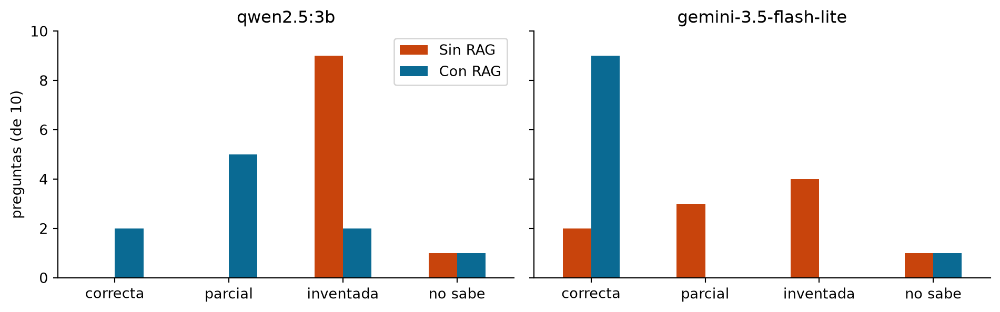

| id | pregunta | fuente |
|---|---|---|
| 1 | ¿Cuánto tiempo de penalización hay por drafting en una prueba de distancia estándar? ¿Y en una sprint? | reglamento_world_triathlon p.34 | reglamento_fetri p.28 |
| 2 | Soy de grupos de edad, tengo 35 años y la natación es de 1500 m. ¿A partir de qué temperatura del agua está prohibido el neopreno? | reglamento_world_triathlon p.41 | reglamento_fetri p.34 |
| 3 | ¿Me puedo desabrochar el casco en la transición antes de dejar la bici en el soporte? | reglamento_world_triathlon p.69 | reglamento_fetri p.56 |
| 4 | Según el reglamento de la Federación Española de Triatlón, ¿con cuántas sanciones por drafting te descalifican en una prueba de media distancia? ¿Se pueden recurrir? | reglamento_fetri p.51 |
| 5 | Tengo asma y uso Ventolin inhalado. ¿Cuánto puedo tomar el día de la carrera sin dar positivo? | cima + lista_prohibida_wada p.9 |
| 6 | ¿Y si en vez del inhalador tomo Ventolin jarabe? | cima + lista_prohibida_wada p.9 |
| 7 | Estoy resfriado. ¿Me da positivo tomar Frenadol Descongestivo antes de una carrera? | cima + lista_prohibida_wada p.16 |
| 8 | Me han recetado Adolonta para el dolor. ¿Lo puedo tomar el día de la competición? | cima + lista_prohibida_wada p.17 |
| 9 | Tomo Sumial (propranolol) para la tensión. ¿Está prohibido en triatlón? | cima + lista_prohibida_wada p.20 |
| 10 | ¿Quién ganó el Campeonato del Mundo de Ironman de 2025? | ninguna (pregunta de control) |
3. Sin RAG frente a con RAG
Aquí se demuestra lo que pide la fase C: que el RAG responde mejor que el mismo LLM sin contexto. A cada modelo le hacemos la misma pregunta de dos formas: solo la pregunta, y la pregunta con los trozos recuperados. Como lo único que cambia es el contexto, la diferencia se debe al RAG.
Lo hacemos con dos modelos:
qwen2.5:3bcon Ollama, en local: pequeño (3.000 millones de parámetros), gratis y sin internet.gemini-3.5-flash-litede Google, por API: un modelo mucho mayor. Es el que usa la app publicada (página 4).
Las preguntas
Diez preguntas de nicho con una respuesta exacta en nuestras fuentes. La última es de control: su respuesta no está en el corpus, para comprobar que con RAG dice que no lo sabe en vez de inventar.
En fuente, + significa que hacen falta las dos (CIMA y la WADA) y | que vale cualquiera (la FETRI copia en español el reglamento de World Triathlon).
Resultado
Cada respuesta tiene un veredicto: correcta, parcial, inventada (da un dato falso) o no sabe.

| qwen2.5:3b | gemini-3.5-flash-lite | |||
|---|---|---|---|---|
| Sin RAG | Con RAG | Sin RAG | Con RAG | |
| correcta | 0 | 2 | 2 | 9 |
| parcial | 0 | 5 | 3 | 0 |
| inventada | 9 | 2 | 4 | 0 |
| no sabe | 1 | 1 | 1 | 1 |
- Sin RAG, los dos se inventan cosas, y con total seguridad. qwen se inventa 9 de 10: que el neopreno se prohíbe “a partir de 28 ºC”, que Adolonta “es adenosina”, que Frenadol “lleva desmopánico”. Gemini sabe más (acierta las 2 más conocidas), pero aun así se inventa 4: la más grave, que el propranolol está prohibido en triatlón, cuando no lo está.
- Con RAG, ninguno de los dos inventa datos de fuera: todo sale de los trozos, con su cita, y en la pregunta de control dicen que no lo saben.
- Con RAG, el modelo grande acierta casi todo: Gemini pasa de 2 a 9 correctas y 0 inventadas. qwen se queda en 2 correctas y 5 parciales, y en dos preguntas lee mal el contexto hasta dar una respuesta peligrosa (que el Frenadol “no da positivo”). La recuperación es la misma para los dos (trae el dato exacto en 8 de 9 preguntas, página 2): la diferencia está en leer bien los trozos, y ahí el tamaño del modelo importa.
- Lo único que falla con Gemini y RAG es la del Frenadol: contesta “no lo sé”, porque el trozo con el umbral de 150 µg/mL no se recupera (la limitación de la página 2). Es mejor que inventar.
- El prompt también importa. En una primera versión, Gemini contestaba “no lo sé” en 2 preguntas que tenía delante (por ejemplo, en la de Sumial, porque el triatlón no aparece en la lista). Añadimos dos reglas al prompt: empezar por la respuesta directa, y que si algo solo se aplica en ciertos casos y la pregunta no es uno de ellos, la respuesta es “no”. Con eso pasó de 7 a 9 correctas.
Tres casos (Gemini)
Pregunta 9. Tomo Sumial (propranolol) para la tensión. ¿Está prohibido en triatlón?
Respuesta correcta: No. Los betabloqueantes solo están prohibidos en algunos deportes (tiro con arco, golf, tiro, billar, dardos, automovilismo…) y el triatlón no está en esa lista.
Sin RAG (inventada): Sí, el propranolol está prohibido en triatlón bajo las normativas de la Agencia Mundial Antidopaje (WADA/AMA) y, por lo tanto, por World Triathlon y la Federación Española de Triatlón (FETRI). Aquí te explico los detalles importantes que debes conocer: ### 1. ¿Por qué está prohibido? El propranolol pertenece a un grupo de medicamentos llamados betabloqueantes. Estos fármacos reducen el ritmo cardíaco y la presión arterial, y además disminuyen el temblor muscular. En el deporte, se consideraban tradicionalmente sustancias dopantes porque
Con RAG (correcta): No. El principio activo de Sumial es el propranolol [cima]. Aunque los beta-bloqueantes (clase a la que pertenece el propranolol) están prohibidos en competición solo en determinados deportes específicos y, en algunos casos, fuera de competición [lista_prohibida_wada, p. 20], el triatlón no se encuentra entre los deportes mencionados en el reglamento [lista_prohibida_wada, p. 20].
Por qué: Sin RAG dice que el propranolol SÍ está prohibido en triatlón (falso). Con RAG: ‘No’; solo en tiro con arco, golf, tiro… (WADA p. 20).
Pregunta 2. Soy de grupos de edad, tengo 35 años y la natación es de 1500 m. ¿A partir de qué temperatura del agua está prohibido el neopreno?
Respuesta correcta: Prohibido con el agua a 22 ºC o más; obligatorio a 15,9 ºC o menos.
Sin RAG (inventada): Según la normativa oficial de la World Triathlon (Triatlón Mundial) y de la mayoría de federaciones nacionales (como la FETRI en España), para la categoría de Grupos de Edad en la distancia de 1500 metros (que corresponde a un triatlón distancia olímpica), el uso del neopreno está prohibido a partir de los 24,6 ºC inclusive. Aquí te detallo los rangos de temperatura del agua para los grupos de edad en natación de 1500m: * Menos de 15,9 ºC: El uso del neopreno es obligatorio. * Entre 16,0 ºC y 24,5 ºC: El uso del neop
Con RAG (correcta): A 22 ºC [reglamento_fetri, p. 34]. Para las competiciones de Grupos de Edad hasta 45-49 o Veteranos 1, en distancias de hasta 1500 m, el uso del traje de neopreno está prohibido por encima de 22 ºC [reglamento_fetri, p. 34].
Por qué: Sin RAG da 24,6 ºC (es el límite de más de 1500 m). Con RAG: 22 ºC, FETRI p. 34.
Pregunta 10. ¿Quién ganó el Campeonato del Mundo de Ironman de 2025?
Respuesta correcta: No está en nuestras fuentes: con RAG tiene que decir que no lo sabe.
Sin RAG (no sabe): En este momento aún no se ha celebrado el Campeonato del Mundo de Ironman de 2025, por lo que no hay ningún ganador. Como referencia, los Campeonatos del Mundo de Ironman suelen disputarse a finales de año (divididos tradicionalmente entre la categoría masculina y femenina en diferentes localizaciones como Kona, Hawái, y Niza, Francia). Por lo tanto, el evento de 2025 tendrá lugar en los últimos meses de ese año.
Con RAG (correcta): No lo sé con mis fuentes
Por qué: Sin RAG dice que aún no se ha celebrado (su fecha de corte). Con RAG: ‘No lo sé con mis fuentes’.
El mismo caso con el modelo pequeño (qwen)
Pregunta 8. Me han recetado Adolonta para el dolor. ¿Lo puedo tomar el día de la competición?
Respuesta correcta: No. Adolonta es tramadol, un narcótico prohibido en competición (sección S7 de la lista WADA).
Sin RAG (inventada): Adolonta, también conocido como adenosina, es un medicamento que se utiliza para tratar la angina de pecho y otros problemas relacionados con el corazón. Es importante seguir las indicaciones del médico o farmacéutico, ya que la dosificación y el uso de este medicamento pueden variar según la condición del paciente y las indicaciones específicas del médico. La competición puede ser un momento emocionante y importante, pero es crucial que cualquier medicamento que esté tomando se use de manera segura y conforme a las instrucciones. Si tienes alg
Con RAG (parcial): No, no puedes tomar Adolonta el día de la competición. Explicación: Adolonta contiene tramadol, que está prohibido en competiciones según la lista de sustancias prohibidas WADA (S4.2. ANTI-ESTROGENIC SUBSTANCES). Este principio activo se encuentra en la lista prohibida S4.2, que está prohibida en todas las competiciones (in- and out-of-competition).
Por qué: Con RAG: no se puede tomar (bien), pero lo pone en la sección equivocada y ‘también fuera de competición’ (falso). Sin RAG: Adolonta ‘es adenosina’.
Todas las respuestas
| id | veredicto_sin_rag | veredicto_con_rag | nota |
|---|---|---|---|
| 1 | inventada | correcta | Sin RAG: 1 min en sprint y 2 min en estándar (falso: son 30 s y 1 min). Con RAG: 1 min y 30 s, FETRI p. 28. |
| 2 | inventada | correcta | Sin RAG da 24,6 ºC (es el límite de más de 1500 m). Con RAG: 22 ºC, FETRI p. 34. |
| 3 | correcta | correcta | Sin RAG acierta: es una norma muy conocida. Con RAG: 'No' con la norma exacta, FETRI p. 56. |
| 4 | inventada | correcta | Sin RAG: dos sanciones y 5 minutos (falso). Con RAG: tres sanciones y no se pueden apelar, FETRI p. 51. |
| 5 | correcta | correcta | Las dos dan 1600 µg/24 h y 600 µg/8 h. Con RAG, además, cita la WADA p. 9. |
| 6 | parcial | correcta | Sin RAG habla de los efectos del jarabe pero no del dopaje. Con RAG: 'No'; salbutamol por vía oral, prohibido; la excepción es solo inhalado (WADA p. 9). |
| 7 | parcial | no sabe | Sin RAG: pseudoefedrina prohibida, sin el umbral. Con RAG dice 'no lo sé': el trozo con el umbral de 150 µg/mL no se recupera (limitación de los embeddings entre idiomas). |
| 8 | parcial | correcta | Sin RAG: prohibido 'en muchos deportes' y habla de la UCI (impreciso). Con RAG: 'No'; tramadol, S7, prohibido en competición (WADA p. 17). |
| 9 | inventada | correcta | Sin RAG dice que el propranolol SÍ está prohibido en triatlón (falso). Con RAG: 'No'; solo en tiro con arco, golf, tiro… (WADA p. 20). |
| 10 | no sabe | correcta | Sin RAG dice que aún no se ha celebrado (su fecha de corte). Con RAG: 'No lo sé con mis fuentes'. |
| id | veredicto_sin_rag | veredicto_con_rag | nota |
|---|---|---|---|
| 1 | inventada | parcial | Con RAG: 1 min en estándar bien, pero 10 s en sprint (es la sanción de otras infracciones). Sin RAG habla de maratones. |
| 2 | inventada | parcial | Con RAG da bien los 22 ºC, aunque empieza con un 'No' que no viene a cuento. Sin RAG dice 28 ºC. |
| 3 | inventada | parcial | Con RAG acierta el 'No', pero lo justifica con la norma de la T1 (s) en vez de la (q). Sin RAG: 'depende del casco'. |
| 4 | inventada | parcial | Con RAG: no se pueden apelar (bien), pero dice dos sanciones (son tres en media distancia). |
| 5 | no sabe | no sabe | Con RAG dice que no puede dar la cifra aunque el límite estaba en los trozos. Sin RAG tampoco se moja. |
| 6 | inventada | inventada | Con RAG dice que el jarabe NO está prohibido y le aplica el límite inhalado (falso). Sin RAG dice que Ventolin es formoterol. |
| 7 | inventada | inventada | Con RAG dice que Frenadol NO da positivo (falso y peligroso). Sin RAG: que lleva 'desmopánico'. |
| 8 | inventada | parcial | Con RAG: no se puede tomar (bien), pero lo pone en la sección equivocada y 'también fuera de competición' (falso). Sin RAG: Adolonta 'es adenosina'. |
| 9 | inventada | correcta | Con RAG: 'No.' Correcto, aunque sin explicación ni cita. |
| 10 | inventada | correcta | Con RAG: 'No lo sé con mis fuentes'. Sin RAG se inventa ganadores (Nicki Yuen...). |
Las respuestas completas, con los trozos recuperados, están en resultados/comparativa.csv (qwen) y resultados/comparativa_gemini.csv (Gemini). Se generan con python src/evaluar.py: sin la variable GEMINI_API_KEY usa qwen y con ella, Gemini. Los veredictos se ponen a mano después.